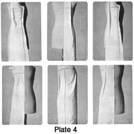
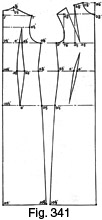
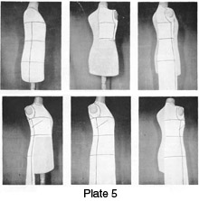
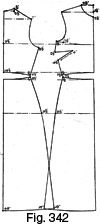
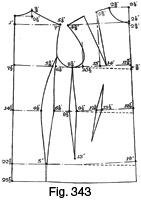
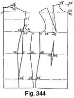

Early 1940's—Ladies' Garment Cutting and Making
by
F. R. Morris
Chapter XXII—The Art of Modelling
Modelling Patterns in Toile
MANY dressmakers prefer to cut their patterns by modelling in muslin or toile direct on to a stand or the actual figure. In the hands of practised modellers, modelling patterns becomes as accurate and simple as drafting on the flat, but, generally speaking, modelling is an art which needs a lot of study and accurate and patient work. The great French dressmakers, almost without exception, model their creations either on stands or the actual figure and spend much time and material before the garment is satisfactory. In comparison with scientific cutting, modelling is a laborious job, but the knowledge of how to model will materially assist the pattern cutter in her job, for she will know how the systematic drafts are derived from modelling practice.
There is more than one method of modelling or draping muslin to the stand or the figure. One way is to build up the design gradually on the stand by cutting and draping each section of the design piece by piece. This method involves much more waste of time and material than the second method described below, for the fitting of the stand and designing cannot be systematically carried out in sections without the balance of the various sections becoming disturbed. This method also means constant reshaping and recutting, as it is practically impossible to cut the exact line required without comparison with the other sections of the design as a whole.
The most practical of all modelling methods is that of fitting the exact outline of the stand or figure with a muslin "shell," care being taken to obtain a perfectly fitting model by the unrestrained use of panel seams and darts. While this perfectly cut shape is on the stand, the lines of the design are marked in with chalk and then transmitted from the shaped model on to a flat plane by the outline of the design being traced from the modelled shape. Therefore, when the re-marked pattern is sewn together, the garment should be identical with the original model with the same waist suppression fitting as in the original, but obtained without the panel seams.
For very cut-about designs, this method of modelling is to be preferred to flat pattern cutting, as the waist suppression can be infused into the muslin shape and subsequently into the traced-off pattern outline with a certainty of the accurate original outline being retained. The typical Parisian dress or coat is usually distinguished by extremely varied design with many pieces, and it is often impossible to infuse directly by straight cutting the required amount of waist suppression into the coat as the design lines may be so intricate as to give no possible position or run of seam to accommodate the suppression quantities. By modelling a shape to the size of garment required, we are making sure of the suppression and fitting before attempting the designing, which is the correct procedure, for the fitting qualities of any garment should be considered before points of design.
It has been the experience of the author to observe cutters shirking the issue of waist suppression and fit when faced by a very cut-about design. They usually content themselves with attempting to reduce a large quantity of the waist suppression from the sideseams, leaving the back and front waist to take care of themselves. The question of waist suppression is a strong point with the author, and he firmly believes that insufficient attention is paid to this important point simply because the majority of cutters are shy of deviating from their established ideas.
To obtain the outline shape it is necessary to be armed with plenty of pins and muslin. The French method is to make a model of one side of the figure and design only, that is, of course, if the design is an even one and not two-sided. In the event of an uneven design it is advisable to make a complete model of both sides of the shape.
For a dress model shape, firstly mark on the stand the exact centre line of the back and front from the neck to the end of the stand. Then take a suitable piece of muslin, long enough to take the full length of the dress and wide enough to pass round the figure shape to the sideseam position under the arms. Mark the height of the collar seam at the back neck and then commence to pin the muslin to the centre back line, allowing about 1½ inches above the back neck line for adjustment of the neck height.
Pin the muslin down the centre back line from the neck to the required length. After this has been done, smooth the muslin out over the hips to the sideseam, and then pin at the sideseam from the breast level down into the waist hollow and over the hip curve to the hem, making sure that the muslin lies smooth in and out of the side waist hollow without any tendency to "tie" at the waist line and without any dragging from the blade level or the hips.
It will now be observed that, if the hips are fitted closely, it will not be possible to fit the breast level at the back to such a close degree. In fact, a certain quantity of ease at the breast level must be left, otherwise straining the muslin to fit the back at this point will result in the sideseam being pulled away from the waist hollow, which indicates that, when the waist is returned back to the waist hollow, a dragging crease will become apparent from the blade level to the side waist. Summing up, it is apparent that to fit the back perfectly at the breast-line level, it is not possible to reduce the garment to size at the side-seams only, but instead a certain quantity of the surplus size and material must be reduced under the prominence of the blades.
The loose material in the back waist hollow is shaped to the figure after the shoulders have been fitted and the scye shaped.
To shape the shoulders, smooth the muslin up round the neck to the point where the shoulder seam is required, and then pin round the neck and mark a sewing-edge run. Roughly trim the material to the shape of the back neck curve, and then smooth down the shoulders and up over the blades to obtain the location of the shoulder seam. Pin from the neck curve down in the required shoulder seam position, and then gather in the shoulder length slightly over the blade to keep the armhole from the shoulder end to the breast line close to the figure and to provide shape for the prominence of the blade. Measure the shoulder width and back width and roughly shape the armhole from the scye level to the shoulder end, making the depth of the scye from the neck level equal to one-third of the half-breast measure plus 1½ inches or 7½ inches for a 36-inch bust girth.
Mark the breast line square across from the centre back to the scye level and shape the scye. Then, at the sideseam, mark down from the breast line to the bottom edge of the shape to define the sideseam at exactly under the arm.
The back waist suppression is the next point. Carefully pin away the surplus material in the back waist hollow and over the breast line to the blade. On the standard model shape it will be found that about 1¾ inches will be taken out in the suppression; but the point to note is that this suppression is correctly reduced at this point, for if we tried to take in the garment more at the sideseam, the result would be that the sideseams would not lie smoothly in the hollow of the waist at the side. This definitely means that suppression at the sideseams under the arms is correct only to a small degree, and not to the extent sometimes seen, quantities from 1½ to 2 inches being incorrectly reduced at this point.
The moulding of the back to the figure is now finished, and we can proceed with the more accurate shaping of the back to the half-width measure and the back of the armhole to the shoulder end.
The fronts are the next consideration. Commence by marking down the exact centre of the stand a balance line to which to pin the muslin. Then with a suitably large piece of muslin, pin down the centre front line from the base of the neck to the length required. When this has been firmly completed, commence to smooth the muslin up to the shoulder seam marked on the back shape, making sure that the muslin is not dragged away from the fronts when shaping round the neck curve. Roughly shape round the neck and pin across the shoulder for about 2 inches.
Then smooth the muslin back over the round of the hips to the sideseam line of the back shape and, taking care not to drag the muslin out of balance, pin the sideseam from the hip level to the armhole level of the back, making sure of having sufficient length at the sideseam for the material to lie smoothly in the hollow of the waist. A certain amount of surplus material will be left in the waist hollow under the bust prominence, which cannot be reduced elsewhere than at this point. To endeavour to make the reduction at the sideseam would cause the material to leave the waist and set up dragging creases from the breast and hip prominence in front. So make sure that the sideseam length is sufficient before troubling about waist suppression.
Mark down the sideseam line immediately above the back sideseam line and then continue with the shaping of the shoulders and the front of the scye. As the material lies at present, without the shoulder pinned throughout, there is a decided surplus at the front of the scye, causing a V fold of material diagonally from the bust point to the front scye. To get rid of this fold it is necessary to take out a wedge of material down from the shoulder to the bust point to pull the surplus length away and upwards from the front of the scye; in other words, the bust dart is taken out. When the surplus length has been taken away, and the bust dart pinned down to the prominence, complete the pinning of the front shoulder to the back, and then mark the shoulder seam immediately above the back seam and correct the shoulder width to agree with the back shoulder. Here it must be noted that the front shoulder is smoothed cleanly into the hollow of the shoulder, while the back shoulder is eased in slightly to make provision for the round contour of the blades.
Now measure back from the centre front point on the breast line, for the front of scye or armhole position, one-fourth of the breast measure less 1¼ inches for all sizes. Mark a line square upwards from this point, shape the front of the armhole from the side-seam to ¼ inch in advance of this line, and terminate at the shoulder end to complete the model.
The purpose of making the model is to illustrate the correct location of the waist suppressions and general balance points.
Fig. 341
Fig. 341 illustrates the modelled shape placed in the square. For the purpose of simplicity, measurements are used to denote the various lengths in their relationship.
It will be noted that the sideseams are reduced only ½ inch in quantity at the back and front from the breast width, while a very large quantity is reduced at the back waist in the panel. This suppression is carried well above the breast line to the blade prominence. The sideseam at the back skirt is rather straight in line, but the skirt width is usually increased in a panelled garment by an addition to each panel seam. This is obtained when cutting the modelled shape in one piece by cutting up the model from the hem to the hip level and opening out the skirt width until the modelled shape can be placed flat.
The fronts have a diagonal suppression dart ranging from the hip bone to under the bust prominence and running on the "corner" of the body at this section. Again note the straight run of the sideseams from the bust to the waist, from the waist to the hips and from the hip level to the hem, and also note the quantity taken from the front waist dart.
These outlines are not the result of mere system-making, but are the actual shape of a perfectly modelled and fitting shell pattern and, as such, have the convincing quality of being absolutely correct. With modelling, one cannot rely on the efforts of the person making the garment in order to obtain a good fit. The actual modelled shape must take the outline of the figure naturally, and so the balance of each part must be perfect, otherwise an adverse effect will be apparent elsewhere. In modelling, one cannot hope to achieve success unless each section of the garment has this perfect balance.
Making a Model Without Panel Suppression
The previous description was concerned with the fundamental modelling construction, and now we go on to more practical work in the making of a model to fit the shape without panel-seam waist suppression. With this model, there is a waist seam, and the suppression is modelled out direct without recourse to panel-modelling and recutting.
The breast, waist and hip balance lines should be clearly indicated on the stand in addition to the centre back and front vertical lines.
Take a suitable piece of material and commence at the centre back neck. Allow about 1 inch above the nape of the neck for the back neck curve, and then pin down the centre back from the nape of the neck to the natural waist line. Make sure that the grain of the material is perfectly correct vertically and horizontally. After pinning down the back, smooth the material to the sideseam at the breast-line level and smooth over the blades to the shoulder seam. Pin the shoulder and back neck covering material in place and mark the run of the shoulder seam to the required angle. Measure round the back neck one-sixth of the half-breast measurement less ¼ inch and shape from the nape of the neck to meet the shoulder seam. The shoulder seam should be marked to the required width, about one-eighth of the breast measurement plus ½ inch, and then the width of the back marked from midway of the nape of the neck and the breast line to the armhole. Mark roughly the shape of the armhole at the back, and then complete the modelling of the back bodice by pinning down the sideseam from the breast line to the waist level. The material should be carefully smoothed to the figure before pinning, and afterwards the sideseam and the waist line marked in.
To model the back skirt section, take a piece of material of sufficient length and pin down the centre back line to the hip level and the bottom of the stand. Then carefully smooth the material towards the side-seam at the waist and hips, making sure not to force too much width into the skirt by distorting the balance of the material grain. The grain should run horizontally in accordance with the marked balance lines on the stand until at the side back "corner" of the figure where it is deflected in a downward direction, as the back waist hollow requires more length to fit into the sideseam. After pinning down the side-seam from the waist to the hip level, mark the waist seam and the sideseam run vertically from the hip level to the hem line. Additional width may be added at the sideseam away from the stand when cutting out.
The back is now completely modelled, and the next consideration is the front.
Commence by pinning from the neck to the breast and waist lines down the centre front, and then shape the material up to the shoulder seam round the neck column. The material will require to be cut away as illustrated in Plate 5, and it is quite a good plan to cut out the neck shape and obtain the neck point before commencing to model on the stand. For this purpose, mark a straight line on the material or work from a straight edge, and then mark in a quantity equal to one-twelfth of the breast measurement for the neck point. A similar quantity should be marked downwards on the centre line, and then the circular shape of the neck curve can be cut away before the material is pinned down the centre front.
Assuming that the neck point has been found, the next operation is to smooth the material into the hollow of the shoulder and down past the front of the armhole to the sideseam. Pin the shoulder and mark the seam run directly above the run of the back shoulder.
Pin the material at the top of the sideseam on the breast level, and smooth the excess to the level of the bust prominence preparatory to reducing in a dart from the sideseam.
Smooth the material over the breast to the waist line and then mould the muslin from the centre front line to the sideseam at the waist level, making sure to keep the grain of the material horizontal until the natural curving round of the figure into the side waist causes a divergence downwards from the horizontal. Mark the waist line, then pin the sideseam from the breast to the waist line and reduce the excess material in the breast dart as illustrated.
On the breast line, mark back from the centre front line one-fourth of the breast measure less 1¼ inches for the position of the front of the armhole. Mark a line squarely up from this point, and shape the arm-hole from the sideseam to the shoulder end, advancing ¼ inch in front of the scye line.
The skirt is modelled in a similar manner to the back, i.e. by pinning down the centre front line and then smoothing the material to the sideseams and into the waist hollow, care being taken to keep the grain level as far as possible. Mark in the sideseam to match the back sideseam, and mark the skirt run below the hip level to allow for sufficient stride room in the hem. An average width of the hem is approximately 4 to 6 inches more than the hip measurement for a straight skirt.
The model is now completed and we can examine the outline on the flat by referring to Fig. 342.
Fig. 342
The first point which strikes the eye is the displacement of the breast and waist balance lines from the horizontal and the lower shoulder slope on the back shoulder. This is caused by the closing out of the waist suppression at the side back to obtain the shape in one piece, and is exactly as described in the chapter on Waist Suppression. The actual size of the back-scye is the same as that of Fig. 341, so the shoulder slope is unchanged in principle.
In the back skirt there is an increase of width at the hem and a curvature of the waist and hip balance lines to the extent of approximately ¾ inch from the horizontal.
At the fronts, we have a raised breast line to keep the front of the armhole the same diameter as the draft showing a breast dart from the shoulder, for, in this instance, the front shoulder slope is rather higher than the previous example. The waist balance line is curved to the extent of ¾ inch, and a large dart equal to 2 inches is reduced at the sideseam to control the material forced down from the front of the scye and round from the waist hollow.
On the front skirt section there is a curvature of the waist and hip balance lines to the extent of ¾ inch, and the hem width is increased in proportion. This increase of hem width is caused by the closing out of the waist suppression as illustrated in the chapter on Waist Suppression.
As further examples of modelled patterns, a modelled "lounge" shape and a sidebody jacket shape are illustrated and described. The "lounge" shape has one sideseam only placed towards the back of the coat as in a man's lounge jacket. This style is generally admitted to be difficult to cut satisfactorily, and the modelled pattern will show how the method of drafting this style is correct in principle.
The Modelled "Lounge" Outline (Fig. 343)
Fig. 343 illustrates an exact outline of the modelled "lounge" pattern placed in the square. Although the model was pinned vertically down the centre front line as usual, the breast line showed a distinct break in an upward direction from the underarm dart towards the back sideseam. The dash line at the breast level illustrates the continuation of the breast line after being diverted, and to indicate the similarity between this modelled pattern and the author's standard draft, the pattern has been placed with the breast line of the back running in line with the diverted breast line at the sideseam to the underarm dart. This indicates that the breast line from the underarm to the fronts is raised or, as the author has systematized the principle, the hip overlap has been inserted at the underarm seam.
A large suppression has been taken out at the side-seam equal to 1¾ inches, and 1¼ inches have been reduced from the underarm dart. Many cutters may look askance at these suppressions, but the truth remains that if a garment is required to fit into the waist, these quantities must be taken out; otherwise how can the waist size be reduced to the figure? The author believes in cutting to an extreme generally; it is easier to allow for ease when the system provides a perfectly balanced garment to an extreme degree of fitting. It is only when we have a system giving a well-balanced garment to a looser degree of fit and then attempt to obtain a closer fit that we meet trouble. For it must be understood that if a garment is well balanced in the closest degree of fitting quality, a slight easiness of fit will not affect the balance, whereas a well-balanced cardigan coat pattern would be far from balanced if made close to the waist measure.
Modelled Outline of a Sidebody Jacket (Fig. 344)
Fig. 344 illustrates the modelled outline of a side-body jacket. Here, also, the similarity between the author's system draft and this model is apparent. Again we see a straight sideseam suppressed only ½ inch at the waist on both seams. The back waist suppression is well shaped to the figure as indicated by the hollow run of the back sidebody seam from the scye to the waist. A point to remember is not to hollow out the back scye too much at the point indicated by A; otherwise, when the sideseam and sidebody seams are sewn out, there will be too much of a hollow run at this point and a fullness will be seen at the top of the sideseam.
Marking the design on the modelled outline should be performed on the stand so that the correct perspective and balance between the design lines are obtained. If the first example of modelling is used for the basic pattern, the suppressions pinned out at the back and front waist should be manipulated as described in the dress-cutting systems in order that the modelled pattern may be placed flat on the pattern paper. On the back bodice, the model should be cut through from the shoulder seam to the blade at the point where the suppression ends, and the skirt should be cut through from the hem line to the hip level to obtain extra skirt width and enable the model to be laid out flat.
The front bodice may have a shoulder dart or a sideseam bust dart. If the waist dart is not required, cut through the shoulder dart to the bust point and re-mark the pattern with the waist dart closed out of the model. If a sideseam dart is used, cut through from the sideseam to the breast prominence, lay the model out flat on the paper and re-mark with both shoulder and waist darts eliminated. The skirt should be manipulated in a similar manner to the back, i.e. by cutting through from the hem line and opening out the skirt width until the model lies flat on the paper.
If a very close skirt is needed and panel seams are shown in the design, the skirt width as modelled will be ample and the waist suppressions are reduced from the panel seams.
If a knowledge of practical pattern making is possessed, it is only necessary to obtain the exact modelled outline from the stand or figure. Every other cutting operation, such as the addition of flares or pleats, may be made away from the stand by flat cutting. To model a dress completely on the stand is a waste of time, for, apart from the actual modelling to the figure, every other operation can be more easily done on the flat.